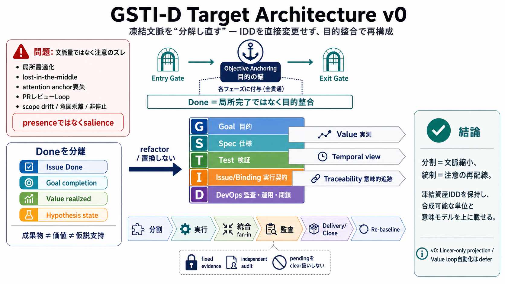

症状（Failures）
局所最適化 / lost-in-the-middle / attention anchor喪失 / PRレビューLoop

凍結文脈を“分解し直す”
IDD（凍結済み）の巨大な文脈が生む失敗を、目的（Goal）への整合を保ちながら扱いやすい単位へ再構成するターゲット・アーキテクチャです。
IDDは直接変更しません。GSTI-Dは「合成可能な単位」と意味モデル（G/S/T/I/D + Value/temporal/traceability）を加えるリファクタの設計図です。
局所最適化が出る理由
IDD運用では「必要な文脈を渡したのに改善しない」失敗が起きます。鍵はpresenceではなくsalienceで、未言語化/未発見の要求は文脈内に“存在しない”ままになります。
結論：失敗を原因として“文脈量の暴発”ではなく、目的への注意が外れる構造問題として扱います。
注意を戻す装置
文脈を巨大に抱えるほど、判断は局所の“できた風”へ流れます。GSTI-Dは各段階の先頭にobjective-anchoring（目的の錨）を保持し、整合ゲートで注意対象を戻します。
5層の意味モデル
GSTI-Dは文脈をG（Goal）・S（Spec）・T（Test）・I（Issue/Binding契約）・D（DevelopmentOps）で層化します。追加の横断軸としてValue（価値の実測）、temporal view、traceabilityを導入します。
done判定は「局所完了」ではなく「目的整合」で統一し、成功物語の書き換えを抑えます。
Doneの種類を分離
典型的誤解は「成果物を受け取った＝価値が実現＝仮説が支持」という同一視です。GSTI-DはIssue Done／Goal completion／Value realized／hypothesis stateを分け、誤結合を避けます。
さらにhypothesis state（supported/refuted/inconclusive）を状態として保持し、pilotで反証します。
整合ゲート運用
GSTI-Dでは各段階で「ローカルに終わったか」よりも「目的に整合しているか」をdoneとします。仮説が反証されたら、反証可能な運用で再設計・re-baselineへ移行します。
目的に基づく統一した判定が、意図乖離や非停止の終端処理を改善します。
分割の副作用を抑える
分割は局所最適化を悪化させうるため、GSTI-Dは「G/S/T/I/Dへの分割」だけで終わりません。objective-anchoringとfan-in統合ノード（レビュー再バインド等）で全体整合を取り戻します。
結論：分割＝文脈縮小、統制＝注意の再配線、をセットで設計します。
監査と証跡の分離
GSTI-DのD3 Auditでは、fixed-evidence gateを強く保持します。executorとauditorが分離できない場合はblocked扱いにし、停止条件が曖昧にならない運用を設計します。
D層の集約
D層は、実装・レビュー・監査・デリバー・クローズ・再ベースライン（ただし自動Valueループはv0でdefer）までのライフサイクルを集約します。さらに証跡と固定証跡、独立監査、Documentation Update Gate、cleanup/closingを分離して強制します。
目的に整合した証跡だけが前進し、曖昧な達成感で閉じられにくくします。
IDDは“保持”する
GSTI-DはIDDを置き換えません。名前替えもしません。IDDが抱える構造を、interfaceを持つ合成可能な単位へ組み替え、意味モデルを追加するrefactorとして位置づけます。
結論：凍結資産を活かしつつ、意味構造を上に載せます。
Linear-only v0
v0はLinearのみのプロジェクションとして設計され、新しいDBやgraph serviceなどの新基盤は導入しません。実装の自由度を保ちつつ、control planeを整える境界も明確にします。
後続issueで具体schema・手順・agent skill/templatesを具体化する前提です。
後続成果物（defer）
v0は実装責務を後続issueへdeferしつつ、契約の形（概念インターフェース）を先に固定します。不足しうるのは具体schemaや生成・整合アルゴリズムで、代わりに“合意の枠”を作ります。
結論：概念インターフェースを先に固定し、現場の“定量的勝ち筋”は後続で検証します。
評価を先に縛る
本資料の導入可否は、pilot 437での反証可能性に依存します。文脈サイズ、retry/loop、stale evidence、objective alignment gate、trace completenessなどを厳密に取り、成功談の書き換えを防ぐ設計です。
結論：成功/失敗を“体感”ではなく“観測”に委ねます。
用語の混線を防ぐ
traceabilityはexecution dependencyと同じではありません。execution edge（blockedBy等）が順序依存を担うのに対し、derives-from / verifies / evidences / bindsのようなsemantic trace edgeを混同しないと明記されています。
導入の最優先確認
GSTI-D v0は、IDDを変えずに失敗の構造を“扱える単位”へ再設計し、目的整合と証跡分離で安全側に寄せます。鍵はKUN-437で、context要約・保持境界・測定値が勝敗を左右する点を、曖昧にせず検証することです。
参照（本資料内）
このデッキは、ユーザー提供テキスト中の用語・番号・方針をそのまま圧縮要約しています（外部参照なし）。
注：本資料単体では、定量閾値・pilotの測定方法・KUN-433/434/435/436の具体が未提示です。
No references found